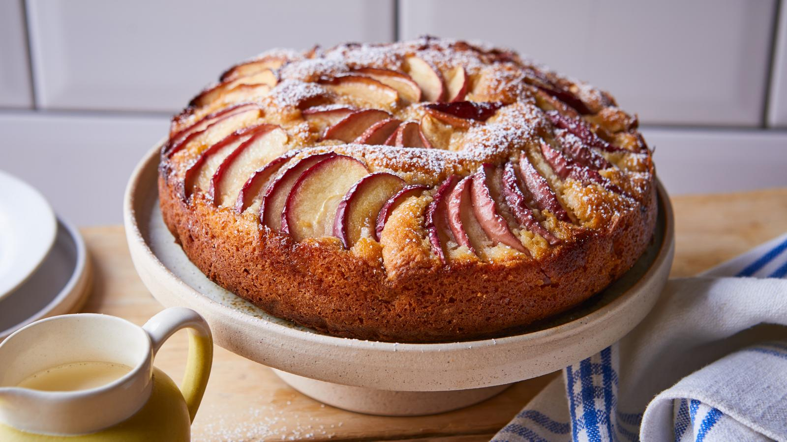
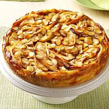
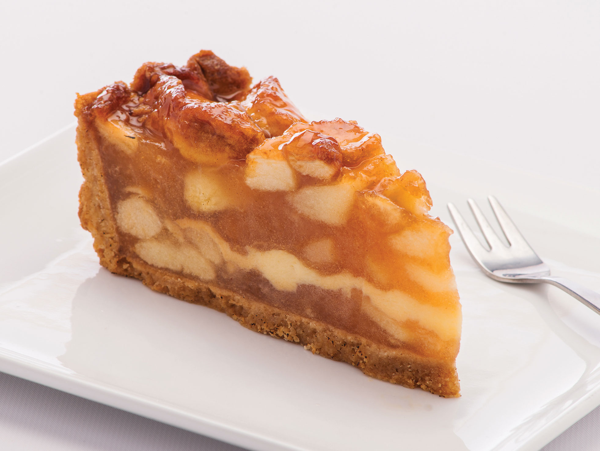

Apple Bavarian Torte (★★★★)

A classic European torte baked in a springform pan.Cream cheese, sliced almonds, and apples make this the perfect holiday treat (12 serving).
INGREDIENTS
- ½ cup butter
- ½ cup white sugar
- ½ cup all- purpose flour
- 1 (8 ounce) package cream cheese
- 1 egg
- ½ teaspoon vanila extract
- ^3/4 cup white sugar
- 6 apples - peeled,cored,and sliced
- ½ teaspoon ground cinnamon
- ½ cup sliced almonds
- ½ cup white sugar
- ½ cup white sugar
DIRECTIONS
- Preheat oven to 450°F (230°C).
- Cream together butter, sugar, vanilla, and flour.
- Press crusr mixture into the flat bottom of a 9-inches spingfrom pan. Set aside.
- In medium bowl, blend cream cheese and sugar. Beat in egg and vanila. Pour cheese mixture over crust.
- toss apples with sugar and cinammon, spread apple mixture over all.
- Bake for 10 mintues. Reduce heat to 400 F (200 C) and continue baking for 25 mintues.
- Sprinkle almonds over top of torte. Continue baking until lightly browned. Cool before removing from pan.
REVIEWS
I loved the buttery taste.
Reviewed on Sep. 22, 2024 by MMASON
Its so Delicious
Reviewed on Sep. 1, 2024 by GLENDACHEF


